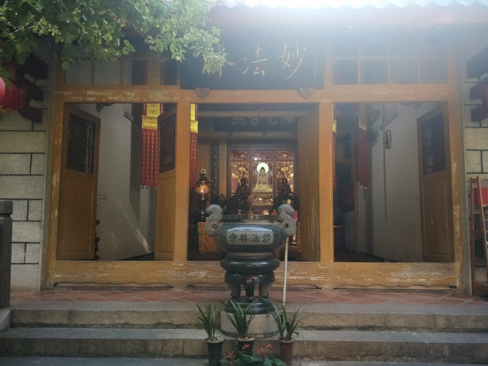

中共（闽中）厦门工委旧址——妙法林寺
中共（闽中）厦门工委旧址妙法林寺位于厦门市思明区开元街道励志路1号。
1946年4月，中共（闽中）厦门工作委员会在妙法林寺正式成立，许集美任工委书记，郑种植、施能鹤为工委委员，工委隶属于中共泉州中心县委，工委机关设于妙法林寺。1947年初，工委机关因所辖联络站遭国民党当局破坏而撤离妙法林寺。1949年初，郑秀宝任工委书记兼组委，工委机关再次迁回妙法林寺，在这里领导厦门（闽中部分）的地下斗争，直到厦门解放。妙法林寺内长期有地下党领导人居住，临时住在这里的地下党同志也不少。妙法林寺的菜姑们不顾个人安危尽力支持革命。她们不仅自觉地、严格地保守地下党的秘密，还热情接待所有来往的革命同志，长期供应同志们吃饭、住宿，甚至在经济困难时，变卖寺内的棉被和家具，维持地下党同志生活。妙法林寺是一个可靠的革命据点。从抗战胜利至厦门解放的4年间，中共（闽中）厦门工委在全市共建立5个党总支、21个党支部，发展党员300余名，建立了大量可靠的革命联络站。工委开展了一系列群众运动，开展统战工作，支援游击战争，配合解放军解放厦门，这些革命活动的开展都与妙法林寺有着直接或间接的关系。此外，妙法林寺还是解放战争时期中共泉州中心县委、中共海澄工委设在厦门的秘密交通站。
妙法林寺于1934年由安南（越南）华侨侯妙音出资，转逢和尚的弟子苏志忍筹备兴建，是具有闽南特色的菜姑主持的佛堂，占地面积750平方米。主体建筑坐西南朝东北，单层砖石梁木结构，卷棚顶，分前、后两斋堂，两侧为厢房。
中共（闽中）厦门工委旧址妙法林寺于1982年3月被厦门市人民政府公布为厦门市文物保护单位，2011年6月被国家宗教事务局公布为全国第一批宗教界爱国主义教育基地。
 330445074@qq.com
330445074@qq.com 12345
12345